A prolific and distinct school of painting flourished in Bundi
in the seventeenth century, which is remarkable for its
unblemished colour sense and excellent formal design.
Bundi Ragamala dated 1591, assigned to the earliest
and formative phase of Bundi painting, has been painted at
Chunar in the reign of Bhoj Singh (1585-1607), the Hada
Rajput ruler.
The Bundi school blossomed under the patronage of two
rulers - Rao Chattar Sal (1631-1659), who was made the
governor of Delhi by Shahjahan and played a conspicuous
role in the subjugation of the Deccan; and his son Rao Bhao
Singh (1659-1682), who was an enthusiastic, self-indulging
patron as revealed from numerous portraits that he
commissioned of himself and other dated works. Innovative
developments have been observed under the reigns of his
successors Aniruddha Singh (1682-1702) and Budh Singh,
whose whiskered face is visible in many portraits. Despite
numerous political disputes and having lost his kingdom four
times, he is known to have encouraged the art of painting.

 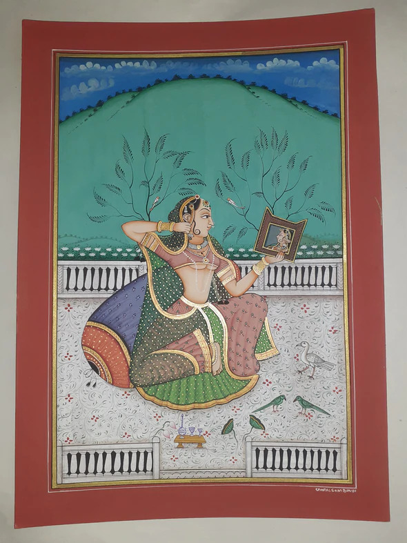
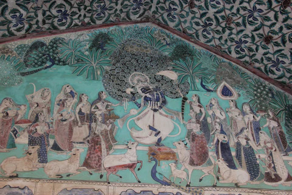
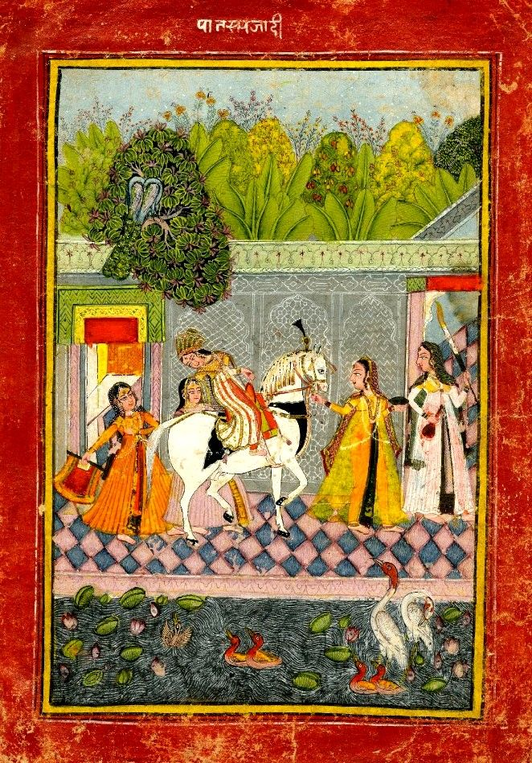
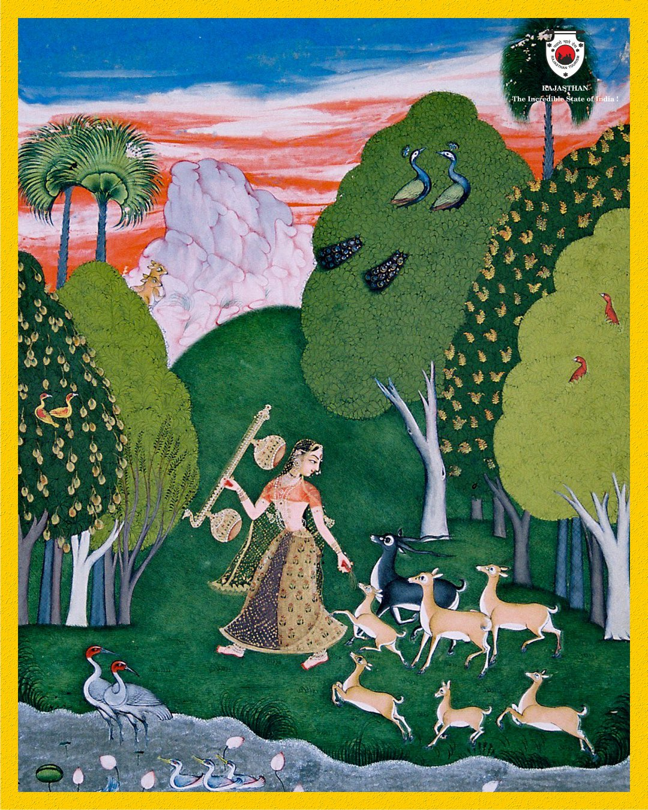
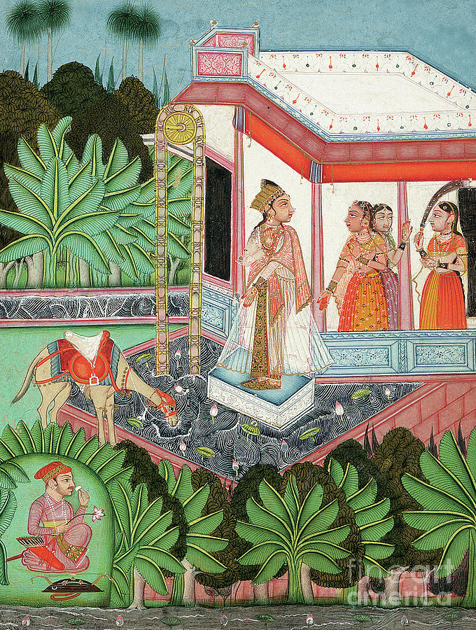
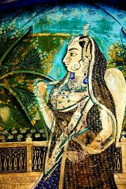
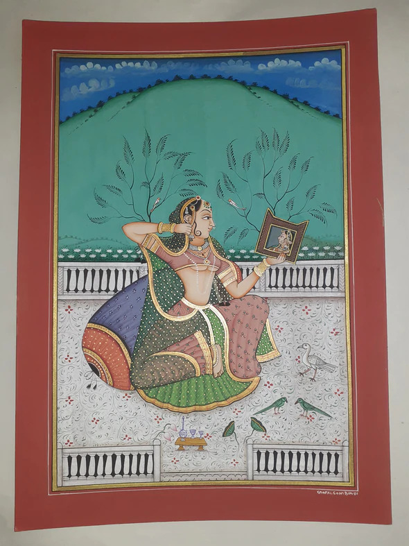
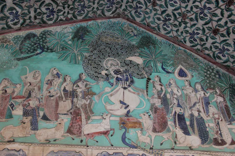
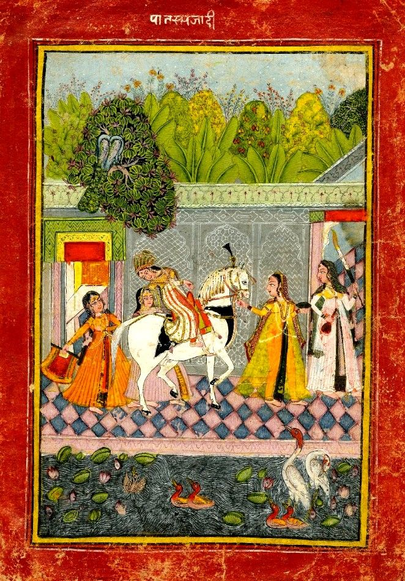
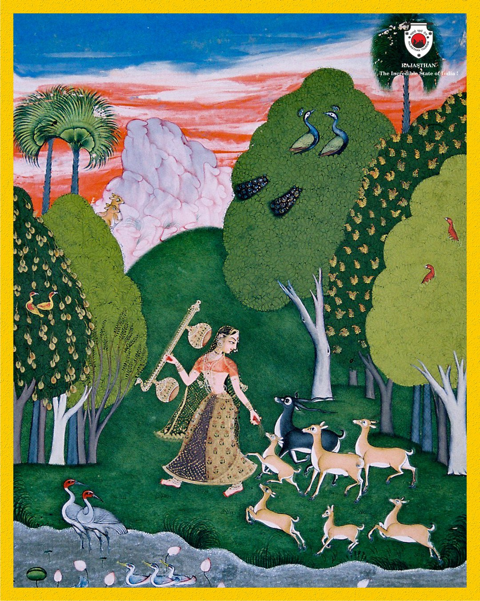
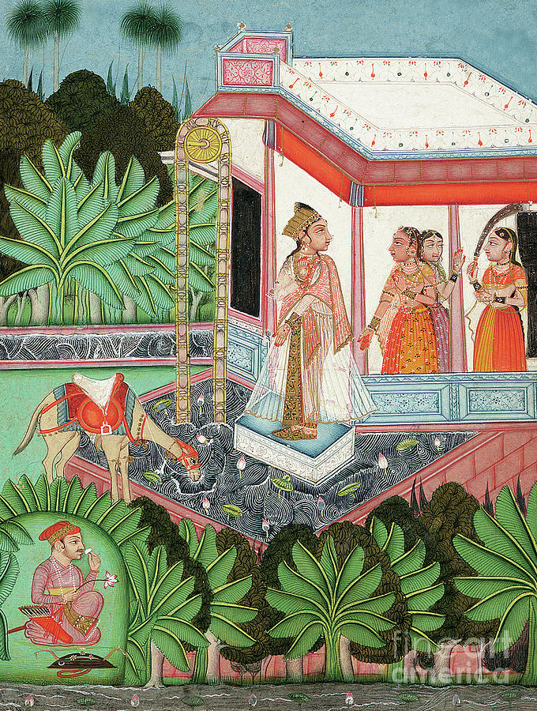
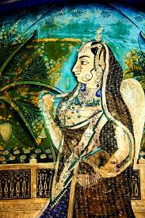